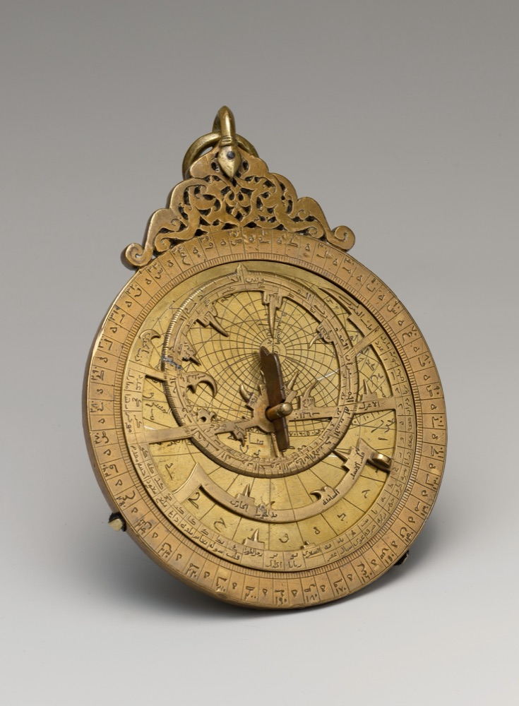

The short answer
Start with one ayah. Read it in context, check its words, write down the question it raises, then take that question to the field that can investigate it.
You don’t need to finish a long course first. Reading a verse and asking what it sends you to find out is already the beginning of research.
This matters because research from the Quran isn’t closed. As we argued in Quran and Science, this is the last book, and each generation brings new tools to it. Your questions as a student today may be ones earlier readers never had reason to ask.
Here is a method you can start this week.
The lens: four tasks from Quran 62:2

Before you open a verse, know what you’re looking for. Surah Al-Jumu‘ah gives four tasks the Prophet ﷺ came to carry out, and we read them as the four ways into any ayah.
يَتْلُوا۟ عَلَيْهِمْ ءَايَٰتِهِۦ وَيُزَكِّيهِمْ وَيُعَلِّمُهُمُ ٱلْكِتَٰبَ وَٱلْحِكْمَةَ
“…reciting to them His verses and purifying them and teaching them the Book and wisdom…” (62:2, Saheeh International)
| Task | What it covers | What to ask of a verse |
|---|---|---|
| Yatlū āyātihi, His signs | The cosmos and the self: astronomy, physics, biology, the brain | What does this send me to observe? |
| Yuzakkīhim, purifying | The self and society: psychology, and systems that help a whole society do right | What would this change in a person or a community? |
| Yu‘allimuhum al-kitāb, the Book | Law, institutions, money and the state | What rule or protocol follows from this? |
| Al-ḥikmah, wisdom | Timing and priority | When does this apply, and what comes first? |
Think of medicine. Researchers in the lab find out what’s true, and doctors practise inside the protocols that research sets. We see the same chain here: the signs lead to research, that research is lived, it becomes rules, and wisdom says when each rule is needed.
Why “follow” matters. Translations usually give yatlū as “reciting.” But Lane’s Lexicon gives “He followed” as the root’s first meaning, and in 91:2 the moon “follows” the sun. On 2:121, al-Tabari prefers “they follow it as it should be followed.”
So we read yatlū āyātihi in 62:2 as more than reading aloud: it leads people to follow the signs. That’s our reading of this verse, and it’s why research sits at the front of the chain.
The method: eight steps from an ayah to published work
Follow these in order. Each step leaves you with something written down, so you can stop and come back.
1. Pick one ayah
Choose a verse that makes you curious, not the one you think you should start with. Read the verses before and after it so you know who is being addressed and why.
2. Write down what you notice
Before you read any commentary, note what you see and what you don’t understand. A yellow sticky note on the page is enough. These first questions are yours, and they’re easily lost once you’ve read someone else’s answer.
قُلْ سِيرُوا فِي الْأَرْضِ فَانظُرُوا كَيْفَ بَدَأَ الْخَلْقَ
ب د أto begin, to start, to originate
What evidence in the earth would show how life began?
Ask a geologist: what do the oldest rocks record?
3. Check the words
Find the root of each key word and read its full range in a lexicon, not one translator’s choice. Then find where else the Quran uses that root, because the other verses often change how you read this one.
4. Ask what follows: ibārat and dalālat
Scholars of uṣūl read a verse in two ways. Ibārat an-naṣṣ is what its words say. Dalālat an-naṣṣ is what follows from them: any case of the same or a greater degree is included, and a lesser case isn’t.
“…say not to them [so much as], ‘uff,’ and do not repel them…” (17:23, Saheeh International)
The words forbid saying “uff” to an aged parent. Shouting at a parent or hitting them is a greater harm, so it is forbidden even more, though the verse never names it.
The same reasoning works when the Quran names one thing from its own time. 5:90 names khamr, the wine of Arabia, and 4:43 points to its effect: being unable to “know what you are saying.” Anything today that does that sits at the same degree, so the same reasoning covers it.
Two checks keep this honest:
- Is your case really equal or greater? A lesser case doesn’t follow.
- Does your reading need a word the verse doesn’t have? Translators put the words they add in square brackets. A reading that rests on a bracket rests on the translator, not the verse.
For each idea in your notes, write down which kind it is: the words say it, or it follows from them.
5. Read what the classical scholars said
Open at least two tafsirs and note where they agree and differ. They read this verse with care and with the tools of their time. You’re reading them to build on them, so don’t skip this step and don’t stop here either.
6. Ask one question
Use the four tasks to turn your notes into one clear question. “What does this verse mean?” is too wide. A good question names what you would go and find out.
7. Go to the field
Take the question to the discipline that can investigate it, whether that’s geology, medicine, law or psychology. Read what that field already knows, and find someone who works in it. This is the step most Quran study never reaches.
8. Write it up, get it reviewed and publish
State your idea briefly, show how you reached it, and say what would prove it wrong. Then get two reviews: a scholar of classical Arabic for the root and context, and a researcher for the method and the data.
Publish it with your name on it and say which ayah started it. Even a small note can spark someone else’s better idea.
A worked example: Quran 29:20
Here is what the eight steps could look like for one verse.
قُلْ سِيرُوا فِي الْأَرْضِ فَانظُرُوا كَيْفَ بَدَأَ الْخَلْقَ
“Say, [O Muhammad], ‘Travel through the land and observe how He began creation.’” (Saheeh International)
| Step | What you might write down |
|---|---|
| Pick one ayah | 29:20. The verse before it (29:19) asks how Allah begins creation and then repeats it. |
| Notice | It doesn’t say think about it. It says travel and observe. What is there to see? |
| Check the words | The root of bada’a is ب د أ, to begin or originate. It appears 15 times in the Quran. |
| Ask what follows | The words command travelling and observing. Observing with tools that see further than the eye is the same act at a greater degree, so it follows. That part is dalālat, not the verse’s words. |
| Read the scholars | Al-Tabari says it answers those who denied the resurrection: see how Allah first brought things into being. Ibn Kathir places it beside 41:53. |
| Ask one question | What evidence in the earth would show how life began? |
| Go to the field | Geology and biology: what do the oldest rocks record? |
| Write it up | A short note that names the ayah, the method and what would prove the idea wrong. |
The classical reading is about the resurrection, and it stands. A student today can also take the command to travel and observe literally, with tools earlier readers didn’t have, and that’s how a verse opens a new line of work.
Common beginner mistakes
- Waiting for a discovery. Don’t start from a headline and look for the matching ayah. Start from the ayah and go looking.
- Trusting one translation. A translator has to choose one word. The root shows you what that choice left out.
- Treating tafsir as the finish line. Earlier scholars did their work. Yours begins where their tools stopped.
- Stopping at a feeling. A verse that moves you is a gift, and it’s a good place to start. It only becomes research when it turns into a question you can investigate.
- Trying to cover everything. One ayah studied properly teaches you more than a surah skimmed.
- Working alone and keeping quiet. Criticism is how work improves. If nobody sees your notes, nobody can correct them or build on them.
What you need to get started
You need a Quran, a way to take notes and a few free references.
| You need | Where to find it |
|---|---|
| Word-by-word Arabic and roots | Quranic Arabic Corpus |
| The full range of a root, in English | Lane’s Lexicon |
| Tafsir in English | Quran.com |
| Tafsir in Arabic | quran-tafsir.net |
| Your notes | A notebook, sticky notes or Quran.com notes |
| What the field already knows | Google Scholar |
These tools each do one part of the job. AASAAR is being built to hold the whole path in one place, from your first note to a published paper.
Common questions
How should a beginner start studying the Quran?
Pick one ayah that makes you curious, read the verses around it and write down what you don’t understand. Then check its key words and read two tafsirs.
How do I study the Quran at home?
Keep one notebook and one Quran together, and work on one ayah at a time. One ayah a week is enough to build the habit.
What’s the difference between studying and researching the Quran?
Study helps you understand what a verse says. Research takes a question from that verse and goes to find something out, then shows the method so others can check it.
Do I need Arabic?
Not to start. You do need to look at the root instead of trusting one translation, and a scholar of classical Arabic should review your work before it counts.
Can I research the Quran if I’m not a scholar?
Yes. Some of the best questions come from school and university students who bring science and philosophy to the book. What you need is review by a scholar and a researcher before your work goes out.
Sources
Verse translations are Saheeh International.